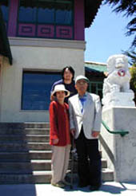
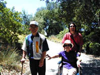
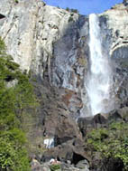
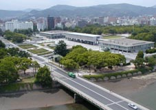
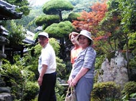
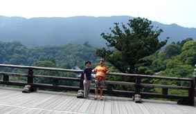

「闘病の記」
|
 サンフランシスコ・東海飯店で(2001年6月12日) |
主人が脳溢血で倒れて9年経ちました。 振り返る心のゆとりも少し出てきたように思い、闘病記を書いてみたらどうかと思ったのですが、主人は 夫が脳溢血で倒れたら、確かにその日から妻の闘病が始まるのかもしれません。
|

|
夫（つま）を知る人のみがいて夕刻の病院の廊下ただ広々し 三人の子らとの一夜苦しがる夫（つま）を押さえて心許せず 苦しみに耐えます夫と子ら三人病室にいて夜（よ）の長々し 切れ切れの意識保ちつつ時に言う夫（つま）の言葉は吾をなごます 簡易ベットに身は横たえど眠られず不安打ち消しただ祈るのみ 「いかがですか」と声かけくるる人ありて病院の朝はざわめき始む 「出家の身となります」と頭刈られつつ夫は神妙な面差し見する 感覚のもどる日や何時祈りつつ夫（つま）の半身吾はもむのみ 片意地を知らず過ごせし三十年思えば夫（つま）にすまぬことばかり 麻痺したる左半身ままならぬ夫（つま）の思いは汲む術（すべ）もなく 立っている夫（つま）のまわりを一才の孫は歩めり右に左に 倒れて半年後、十二月に退院し、翌年5月に次男と孫と共に高野山にお礼参りに行かせて頂きました。奥の院の参道を三時間かけて歩きました。一口では言い表せないほど大変な道のりでしたが、なにより有り難い体験でした。 夫が倒れ一年（ひととせ）を経ぬ高野山へ夫と詣でる今日の日うれし 杖つきて歩む夫に目標はあまりに遠く参道続く 参道の人の流れにかかわらず杖つき歩む夫に添いゆく 幽祖様のみ墓の前にようやくに辿りつきたる喜び深し お礼詣りしたいとう願いかないたる心足らいて高野を下る 駄作を並べました。主人が倒れて一年半の休養後、小学ＳＣ寮に行き三年間、今思えば嵐のような日々だったと思いますが、精一杯自己表現して、そして去年四月、思いがけなく突然、ＰＬ小学校校長という辞令を頂いた主人、本当にびっくりしました。大丈夫なのだろうか、そんな重責に耐えられるのだろうか、などとつまらぬ心配をしながら、神さまに守られて、無事日々を過ごさせて頂いているような気がいたします。 小学校に見学にこられた広島の会員さん方をご案内する主人について歩いておりましたとき、「あんな大病をされ、ご不自由なお体なのに、どうしてあんなに先生は穏やかなお気持ちでいられるのでしょう」と言われました。私はなんと申し上げてよいか、わかりませんでした。倒れて今まで、毎日してきたことは、ただただ家の流れの罪事のお詫びのみでした。きっと神さまが守って下さっているのだと思います。「生かされているだけで有り難いわね」というのが夫婦のいつもの会話です。 夫が脳溢血で倒れた時、闘病するのは夫本人ではなく、妻の仕事です。女性は嫁いだら、嫁いだ先の家の流れを夫に成り代わってお詫びするものだと教えて頂いてきました。夫の家の流れの罪事など妻に分かるはずもないのですが、成り代わりお詫びをさせて頂いておりますと、不思議に夫の心に、夫の家の流れとなっている罪事がはっきりと浮かびあがり、把握されて、お詫びをさせて頂ける道が開けることも発見させて頂きました。 脳溢血というみしらせは、立つこともままならぬ夫本人の辛さもさることながら、影身である妻の心身両面にわたる闘病も又、記録にとどめておきたい手応えのあるものでした。このでんでん虫のホームページをとおして、妻の「闘病の記」をぼつぼつと書かせていただこうと思います。 |
|
平成四年五月三十日（土曜日）は主人の倒れた日です。 この日も教室で保護者会をしていました。そして四時五分ごろ急に気分が悪くなり「もう終わります」と言って、終わりの遂断をしたのですが左手があがりません。ろれつが回らなくなり、「疲れたなあ」と思った時は倒れてしまったのだそうです。保護者の方々の中には看護婦さんもおられました。保護者会の席で倒れたということは、後から考えると本当に有り難いお恵みでした。すぐ救急車でＰＬ病院へ運ばれました。 私は、電話で連絡を受け、すぐ病院に行きました。病院まで行く道中何を考えたか、全く覚えていません。その時は意外と心は冷静だったような気がします。病院に着くと、主人はＣＴの検査に行くため担架に乗せられていて、「赤鉛筆と紙くれ、みおしえ願いをする」と言っています。廊下には保護者の方々が何人もいて下さって、それが何より心強く有り難いことでした。そしてＣＴ検査の結果、右脳に出血しているということがわかり大阪南脳神経外科病院へ運ばれたのです。病院から主人の親しくさせて頂いていたＹ先生に電話して、祖遂断のポイントを教えて頂きました。 ★出血すると血管が縮れているので、血管がのびて血液がよく流れますよう、水がもれて腫れていくので、欝滞している血液が押し流されて、回りの水分を吸収しますよう 大阪南脳神経外科病院へは長女の徳枝が先に行ったため、病院につくと、主人は口から血を吹き出し、血が喉につまらないように顔を横向きに押さえられたりして、緊迫した状態の中で、娘はとても不安な思いをしたようでした（脳の異常で胃に潰瘍が出来て吐血したのだそうです）。私は保険証を取りに一度家に帰り、病院にいった時はドロドロした血を吐いていてびっくりしました。院長先生がおられなくて、帰られるのをひたすら待っている間の不安なこと。 次男靖志は東京で新入社員(カネボウ)の研修期間でしたが、夜七時ごろ東京から帰った時点で連絡をうけ、京都から駆けつけて来たのは夜十時過ぎでした。長男嗣敏は連絡がなかなかとれず夜中十二時ごろやっと病院にきてくれました。 （平成10年5月8日） |
|
五月三十一日 長い長い夜がすぎ、夜が明けはじめました。日曜日の病院の朝、看護婦さんの動きを感じてほっとします。 朝、八時過ぎＣＴを撮り、その後院長先生から説明して頂きました。 九時半ごろから手術の準備が始まりました。頭を剃られた主人は、今さらながら出家した気分のようです。リングアミュレットが取れない、石鹸水をつけて必死ではずそうとするけど、どうしても取れないのであきらめて、手術の時とってもらうことになりました。 手術室の前の待合い室で待っている間、寝ようと思うのだけど、神経が冴えて、ソファに横になっているだけでしたが、それでも心はとても落ち着いていて、お任せしようという気持ちで時間が過ぎていきました。三時、無事手術終了。院長先生から「堅くなっていて、出てこない血腫があったけど、他のところに傷がつくと大変なことになるので、そのままとじました」と説明して頂く。これは、だいぶ前からその徴候があって少しずつもれていたのが、昨日一気に出血したのだろうということのようでした。手術してよかったということでしょう。 手術がすんで、はじめて少しごはんがのどをとおりました。母の作ってきてくれたおにぎりが少し食べれました。それまではお腹はすいているのですが、どうしても食べ物は喉をとおりませんでした。人間の体の微妙さを思います。 その後Ｙ先生のお宅に立ち寄り、経過報告をしたのですが、その時、靖志が「かんしゃくの心で神様にお願いしているような気がするのです。自分の命にかえてと、頭にカーッとくるような感じで、これでは神様に通じないと思ったのですが‥‥‥」というような質問をしました。そして、いったん心を神様にお預けするというような話を図入りで解説して頂きました。 もう一つ、ささやかなかんしゃくの心癖の発見もありました。 主人は、四月十七日、京都の宇治支所へ母親講座で出かけ、その後、靖志の家に行ったのですが、その時靖志は、二、三日前にお父さんが死んだ夢をみたのでどうでも会いたいと思ったのだそうです。そういうこともあるのかとびっくりいたしました。 夜七時がＩＣＵの面会時間です。家族で会いに行きました。主人の姿を見るのはちょっとつらいものがありましたが意識はおぼろげながらあるようでした。 その後、みんなで食事に行きました。食べなければ体力が持たなくなると思うのだけど、昨日倒れた時からとにかく食べ物がのどを通らないのです。昼のうどんもやっと半分食べれただけ、まあ、そのうちちゃんと食べれるようになるでしょう。 （平成10年5月21日） |
|
六月一日 月曜日 昨夜は、とにもかくにも手術が無事終わり、ホッとしたのでしょうか。久しぶりにぐっすり寝たような気がします。 今日から大阪市立病院に勤務している嗣敏が昼十一時頃きてくれましたので、徳枝と三人で面会に行きました。ＩＣＵ室の主人、少し顔が腫れぼったい感じがします。「右目の奥、右耳の奥が痛い」と言います。右耳の上に小さな穴を開けて、そこに管のようなものを入れて出血したものを吸い出したのだそうです。脳の手術なんて、私には信じられない世界です。医学の進歩のすごさをつくづくと感じました。 ＩＣＵの面会時間は夜七時にもあるので、もう一度面会に行き、帰ろうとして駐車場でＹ先生にお会いする。先生ともう一度ＩＣＵ室へ行き、会って頂くことができました。何度も面会に来て頂き、こんなに心強く有り難いことはありません。Ｙ先生の厚い友情にただただ深い感謝の心でいっぱいです。（その後、嗣敏又病院勤務で帰る。） 夜の八時すぎ、徳枝とひもろぎにお詣りに行きました。そしてひもろぎの橋のところで鯉を見ているお母さんと小学生の男の子に出会いました。主人の担任している二年生の礒野君です。お母さんは「三日間、泣き明かしました。なぜ鈴木先生が‥‥‥」と言われて、言葉もない。「ぼくが三年生になる前に教室に先生帰ってくるといいね」と言うと「うん」とうなづいてくれました。その頃、私はまだ脳溢血というものがどういうものか認識が足りなかったのでしょう。主人はきっと治る、この子たちのクラスに又帰れると、かたく信じて疑わない気持ちだったのです。又、そういう気持ちでいたからこそ、これから始まる長い大変な看病の日々を乗り越えることができたとも言えるのかもしれません。 奥津城でひたすら神さまにお願いして遂断り終わり、振り返ると、闇の中を大勢ぞろぞろお詣りにこられる方々がおられます。ハッとしました。主人のためにひもろぎに集まってこられる方々だと思いました。保護者の方、婦人会の方、先生方、その中を徳枝と手をつないで、ひたすら心の中で「有り難うございます」とつぶやきながら、頭を下げて通り過ぎました。橋を渡ったところで従兄弟の天ちゃんに声をかけられました。「お姉さん、八時半は避けてね。みんなで集まって遂断っているのよ」と言われ「ほんとうにありがとう、皆さんにくれぐれもよろしくね」と言ったのですが、涙があふれてきました。なんて有り難いことなのでしょう。ひもろぎに百名近くの方々が集まって、主人のために祈って下さっていたのです。大勢の皆さまの誠を頂きつつ、神さまに見守られつつ、三日目の夜もすぎていったのでした。 （平成10年6月2日） |
六月二日 火曜日
朝、五時に目が覚めました。早いな、どうしようかなと思いましたが、すっきり目が覚めたので起きました。そして気になっていたみおしえ願いをすませることができました。
十一時半にＩＣＵ室に面会に行くと、主人は右手で酸素マスクを口につけてふざけています。
「ひげそりローションがほしい、りんごジュースが飲みたい、頭の中で何が起こったのだ、知りたい、教えてくれ」
「学校に行きたい。下に車があるのか、ぬけて行こう。教育実習が始まっているんだ」
などと言う主人。自分の状況がわかっているのか、わからないのか、とまどってしまいます。そうです。六月一日から学校では教育実習が始まっているのです。記憶はしっかりしているのだと思いました。
「ウォークマンがほしい、いい音楽を聴いて、右の脳を刺激しないといけない」などと、もっともらしいことも言っていました。色々な思いが頭の中を交錯しているのでしょう。院長先生から「肺も落ち着いているし、体の状態も安定しているので、明日観察室の方へ移します」と言われて、一週間ほどはＩＣＵにいるのだろうと思っていたものですから、早いなあ、とびっくりしました。家族の看病に早く切り替えた方が患者さんのためにはいいというのが院長先生の方針のようでした。ということは明日から二十四時間付き添わなければならないということなのです。どういうことになるのか見当もつきません。
夕方、五時に千葉教会に行っておられた影身祖様が帰本されるというので、影身祖ホールの玄関前で待っていました。五時四十分頃、車でご到着され、ご挨拶させて頂きました。
「Ｙ先生は、本当は今日アメリカから帰る予定だったのよ。金曜日に『もう用がないなら帰る』とさっさと帰ってこられたのは、今考えると鈴木先生の為だったのね。Ｙ先生が帰国しておられなかったら、命はなかったわね」と影身祖様に言われて、本当にそうだったなあと神業の微妙さに驚くとともに、主人は本当は死んでいたのかもしれないのだなあと、改めて思ったことでした。
「本気になると、神様はなお大きな試練を下さるのです。生ぬるい人生ではだめですよ。本気で真剣に向かわなければ」ともお教え頂いて、心を引き締めて帰ってきました。いよいよ明日から私の病院生活が始まります。
（平成10年6月13日）
六月三日 水曜日
いよいよ、今日はＩＣＵ室から出る日です。朝、徳枝と出かけようとしてベランダに孔雀サボテンが一輪咲いているのを見つける。「ガンバってね」とお花に励まされているような気がして、嬉しい気持ちになり、写真など撮ってしまいました。
九時三十分、病院に行く前に影身祖ホールに徳枝とお詣りして、影身祖様にご挨拶させて頂くことが出来ました。
「いらいらしてはだめ、いらいらすると、自分の力で治そうということになるのです。神様にひたすらおまかせして『みおやおおかみ』とひたすら、唱えていなさい」と心強いお言葉を頂いて、さあ、病院へ出発です。
十時三十分、ＩＣＵ室で看護婦さんから沐浴・体のふきかたを教えて頂きました。左半身が動かないのでなかなか大変です。右に左にゴロリ、ゴロリと体を動かして拭くのです。そしていよいよストレッチャーに、どうやって乗せるのかと思っていましたら、体の下に敷いてあるバスタオルごと、二人がかりで移すのです。力がいりそうだなあと思いました。四階205号、観察室、ここは最初に病院に運ばれた時に入った、看護婦さんの詰め所のすぐ横の部屋です。
すぐに看護婦さんが来られて、看護婦さんと主人の最初の会話です。
「お名前は？」
「鈴木三郎重家の末孫、鈴木としおッ！」
「何をしていたの？」
「小学校の先生！」
「何を教えていたのかな？」
「食事のしかたッ！」
とにかくお腹がすいてたまらないらしいのです。脳内出血した時、吐血したのでストレス性胃潰瘍になっているかもしれないと、しばらく点滴で栄養を補給して、食事はできないのですが、これが何よりつらいらしく、こちらも大変です。「だいふくッ！」「おいなりさん！」「オレンジッ！」「くれーっ、なんでもいいからくれー、発狂しそうだ！」と、徳枝の手を思いっきりにぎって、「イターイッ」
「何か食べさせて下さい。一生、恩にきます。引っ越しのサカイ君（礒野君のうちはお米屋さんです。礒野君は引っ越しのサカイのコマーシャルに出ているのです）のところでお米買って、手巻き寿司して、弁慶飲んで、快気祝いしよう」などと、食べることのみに頭がいっぱいのようです。あれこれ言いますが空腹以外は順調のようです。夜九時すぎにＹ先生が来てくださいました。消灯時間なのですけど、咎められないし、この病院はとにかく過ごしやすいです。看護婦さんも親切でおだやかで、心が落ち着くのです。
今日夜、来るといっていた嗣敏がなかなか来ないので、十一時半に思い切って徳枝に後を頼み私は家に帰りました。
真夜中の道は走っていると闇の中に吸い込まれそうな気がして、運転未熟の私にとってはこわい帰路でした。十一時四十五分ごろ無事帰宅、十二時に嗣敏より電話があり、安心して休みました。病院で初めて付き添って寝ている徳枝は大丈夫かな‥‥‥と心配しつつ、なんだかとても長い１日でした。 （平成10年6月25日）
|
六月四日 木曜日 十時半、高圧酸素室に行く予定が、血圧が160あるので、薬を二回飲んで一時からになる。 回診に来られた若い先生が、主人の様子を見ながら みおしえのお誓いをして、「神様の言葉なんだな。油断してはいけないということを教えて頂いたんだ」と思いを切り替え、さあ、頑張ろう。 観察室の隣のベットの人はやはり脳溢血の患者さん、五十才代の奥さんです。昼、付き添い婦さんが「口を大きく開けて」と言わないと食べられないので、大きな声で言われると、主人が大きな口を開けて、「何か入れてください」と言うのです。そのうち仕切りのカーテンを寝たままひっぱり、カーテンの下から顔をだして、「僕にもください」と口を開けるので、付添婦さんは「ごめんね。大きな声を出さないと、この人食べないのよ」と恐縮され、笑ってしまいました。お腹がすいてたまらないのでしょう。自分でも「まるで赤ん坊だ」と自覚はしているようでした。 三時半に院長先生が回診に来られ「けいれん発作を起こすことがあるけど驚かないように、こちらでちゃんとしますから、安心して」と言われました。けいれん発作って、どんなものなのだろう。恐いなあ。 「おなかがすいてたまらないらしいのです。、食べたい、食べたいと言うのですけど」 残念、まだしばらく我慢しなければだめみたいですね。 体を拭いて、買ってきた新しいパジャマに着替えてもらいました。看護婦さんに「まあ、鈴木さん、すてきなパジャマ着て、若返ったわね」と言われました。 そして、四時半には、もうリハビリの高部先生が来られる。まだ手術して五日目だというのに、早いものだとびっくりしました。左手、左足を動かして、「座ってみましょう」とベットの上に座らせられる。本人は座れると思ったのでしょうが、体が傾いて、まっすぐ座れないのです。ちょっとこれはショックでした。本人は「早く、早く」という気持ちがあるのでしょう。気持ちが先走り、気負いすぎて、体は全然自分の思うとおりにはならないのです。 「あんまり頑張りすぎてもよくないのですよ。せっかちな方なのですね。いつもこうなのですか」と言われてしまいました。しばらく先生に横に座って頂き、支えられ、並んでベットの上に座っていました。 「しっかり、リハビリして、早く退院しましょうね。それが院長の方針ですから、鈴木さん、いつ、退院しましょうか」 お父さん語録 「口に何か入れてよ。もう昨日で懲りた」 主人のお母さんも脳溢血で亡くなり、お父さんもお母さんの看病を終え、脳溢血になられて亡くなられたのです。気仙沼に見舞いに行ったとき、二階で寝ておられたお母さん、側で看病しておられたお父さんの姿は、今も脳裏に焼き付いています。 色々言っていたのに、夜七時頃から急に静かになる。あんなにあれこれ言って困らせていたのに、静かだとこわいみたいな気持ちになります。主人のリハビリしている姿や、先生に対する反応を見ていて、しみじみ気短か、かんしゃくの癖の家の流れを思います。今は亡きお父さん、お母さんの無念さ、悲しさのようなものも、しみじみと実感させて頂けたような気がします。結婚して今まで、主人の家のことをこんなふうに、わがこととして実感したことは一度もありません。夫婦として大切なことをお教え頂いている、今、入り口に立っているような気がしたのはこの時からでした。 夜中、２時から5時頃、足の点滴が漏れて足が腫れて、痛い痛いと大騒ぎでした。 |
六月五日 金曜日
「鈴木さん、子供さん、何人いるの？」
「何も食べさせてくれない子供が三人」
看護婦さんとの会話です。ユーモアなのでしょうか、今は空腹が一番つらいのでしょう。
一時に体を拭いた時、少し便が出ていました。今まではガスのみで便通がなかったのでほっとしました。 血圧 132二時に従兄弟の若い小児科のお医者さん、村上佳津美君が見舞いにきてくれました。佳津美君に主人曰く「倒れた時は、来るべきものがきたなと思ったよ。高圧酸素室に入っている時は、みおやおおかみになっている。あれがメインだ」
その高圧酸素室に三時三十分に入る。筒のような中に寝たまま入って一時間、中でどんな状態になっているのか、何を考えているのかわかりませんが、これがとてもよいのだそうです。看護している私にとっても、神様にお任せしてほっとする時間でもあります。
四時四十分頃、院長先生が回診に来られ、「明日朝、おもゆ出しましょう。今夜ジュース飲ませてみて下さい」と言われる。看護婦さんから「後で座らせてみて、なるべく起きて食べれるように普通の状態にもどすようにしましょうね」と言われる。
主人はもう「ベットを起こせ、何か食べる」と言って大騒ぎです。「もうちょっと我慢してください」と言うのだけど、心の制御がきかないのでしょう。仕方ありませんね。１週間も絶食したのですから。待望のリンゴジュースを夜、飲んでむせてしまう。しゃっくりがとまりません。「もっとくれ」「もっとくれ」と大騒ぎです。「今夜は帰れないな」と思うけど、お見舞いに頂いていたお菓子の「おひがし」を一口食べて、少し気持ちがおさまったみたいなので、夜十時頃、徳枝を残して帰宅しました。
そして深夜一時頃、徳枝から電話がかかってきました。病院から夜中に電話がかかると、何事か起こったかとどきどきします。「お父さんのしゃっくりがとまらなくて、二時間もしゃっくりをし続けたのよ。」どうなるかとはらはらしながら看病したようです。徳枝の気持ちがまいってしまっているようでした。
六月六日 (土曜日)
朝八時半、病院に行く前に影身祖ホールにお詣りして、影身祖様にお会いすることができました。
「一家が心をあわせて、お父さんのみおしえと思わず、自分のこととしてお詫びすると良い結果になりますよ。神様はびっくりするようなことをされるからね。」とお言葉を頂きました。
主人が倒れる前、高血圧のみおしえを頂いていました。主人が神前で神様にお誓いしているとき、みおしえの言葉が聞こえて来ますと、私は「なんと大変なみおしえだろう。」と他人事のように聞いていたのです。今、主人は脳溢血で立ち上がることも出来ません。もちろん、みおしえをお誓いしようなどという気持ちもないのです。頂いたみおしえは、私が毎日ひもろぎにお誓いしに行きます。主人のみおしえは、今は私自身のみおしえなのです。そういう実感があるのです。こういう感覚を頂けることはありがたいことだとつくづく思います。これが脳のみしらせでなく、例えば胃、肝臓、などのみしらせだったら、主人の考える力がしっかりしているみしらせだったら、たとえどんなに大病であっても、そのみおしえはきっと主人のみおしえで、私は今のような感覚で、我が事として神様にお誓いするなどということはしなかったのではないかと思います。そういう意味では、私は長い間夫婦でありながら、夫婦ではなかったのではないかと思います。みしらせは大変なみしらせですが、神様のお恵みなのかもしれない、とふと思うこともあるのです。
今日は朝食がやっとでました。手術してはじめての食事です。主人にとっては本当に待望のおかゆ、味噌汁でした。あっというまに食べてしまいましたけど。
そして待望の便も出ました。「まだでる、便器に座る」とまたまた大騒ぎです。「もういい」と言うので、便器をとろうとすると、「お腹が痛い、でる、でる」「のぞくな、のぞいたらはずかしい」「内緒でするんだから‥‥‥」とさんざん騒いで、結局紙おむつにした分だけで終わりでした。
昼食は、おかゆ、スープ、魚、ゆで卵、レタス、きゅうり、トマトなど、ついていたレモンまで食べてしまいました。主人曰く「妻が夫を馬鹿にして、『食べることばかりにいやしい』なんて言っていると、これから夫はボケルぞ！ 夫を尊敬しなければいけない」と。そして疲れて寝てしまいました。院長先生の回診で「だいぶいい顔になりましたね。体のぶつぶつは薬の副作用ですが、心配しなくて良いですよ」と言われました。
学園の長浜嘉英先生ご夫妻、お見舞いに来てくださいました。
四時半頃、高圧酸素室へ入り、夕食の時は、たまたまお見舞いに来られた、堂国男先生ご夫妻、正田先生ご夫妻、西川先生ご夫妻と大勢に囲まれて、主人は食べることの方に一生懸命でした。
ベットの左側に立たれても、主人には見えないようなので、右側に立って話して頂かないとならないようです。これはやがて治るのかな、とちょっと心配です。
夜、八時、大阪市立病院から嗣敏が泊まる用意をしてきてくれたので、帰ろうと部屋の戸を開けたら、Ｙ先生が立っておられてびっくりしました。「今日は、大勢面会の人がこられて‥‥‥」と報告しました。「デモンストレーションでしたね」と言われる。影身祖様が高野山に行かれたということで、思いがけずおみやげに高野山のゴマ豆腐を頂いて恐縮してしまいました。
久しぶりに徳枝と二人で帰宅、部屋中の電気をつけないと、なんだか寂しい気分になってしまいます。部屋の真ん中に布団を敷いて寝ました。
（平成10年12月12日）

|
六月七日 (日曜日) 嗣敏が泊まってくれて、久しぶりに家でゆっくり眠ることが出来、ありがたい休養をさせて頂きました。朝には自分の勤めている病院に帰らなければならないと言うので、八時過ぎには病院に戻る。日曜日で病院は静かですが、お見舞いは賑やかでした。私の弟の嫁の千代乃さん、その息子の嗣巌君、依藤さんご夫妻、正井先生。 依藤かっちゃんは、私の高校のクラスメイトです。「左手、足の関節を一つ一つみんな動かしておかないと、リハビリするとき大変なのよ」と仕方を教えてもらう。そういうには全く知識がなかったので感激。ていねいに動かしていたら、手の指のむくみがひいたみたいです。 在乃さんと景君もきてくれました。お父さんにとっては一番嬉しい見舞い客だった事でしょう。３時間余りいてくれて、嗣巌君が京都まで一緒に帰ってくれました。千代乃さんは九日までいてくれるというので、家のこといろいろしてもらって大助かりです。人様の親切が身にしみます。 そして夜は徳枝が病院に泊まり、夜中二時間ばかり、だるいだるい、と寝せてくれなかった、大騒ぎだったと、大変だったようです。 六月八日 (月曜日) 朝、病院に行ったときはお父さんはすでに高圧酸素室に行っていました。高圧酸素室に行くため、ベットからストレッチャーにうつるとき、お父さんは、ころりと自分で転がって、「ささやかな成功って感じだなぁー」と、ニコッと笑ったと、徳枝が嬉しそうに話してくれました。酸素室から帰ってきたときも、ごろごろっとストレッチャーからベットに転がり、グーッと手を突き出して、皆を笑わせる。お父さんの嬉しい努力、そしてユーモアにほっとさせられます。 昼食の後、先生から、「アイスクリーム食べていいよ」と言われて、感激、レモンシャーベットを買ってきました。一時間毎に五分ほど、左手、左足の関節を動かしてあげると、お父さんは気持ちよさそうに寝ています。 今日はなんだか眠くてとても疲れているのを感じる。立ち上がるとめまいがする。耳もツーンと聞こえなくなる。徳枝が今日も泊まるからと言ってくれて、私は帰って家で寝ることにしました。看病疲れが出るころなのかもしれません。 六月九日 (火曜日) 朝、千代乃さんと病室についたのが八時半、徳枝は「昨夜二時間ほどしか寝れなかった。お父さんが『便が出る』とか、色々言って大騒ぎして‥‥‥頭がパニックになりそう」と泣き出す。後はただただベットの横で泣き続け、一時間ほど泣いて寝てしまう。無理もない、まだ高校を出たばかりの18才の娘なのに、本当に私を助けてよく看病してくれると思います。 徳枝は大学受験をしょうと一月の共通テストまで一生懸命勉強していたのに、テストが終わったとたん、「もう、いい。十分勉強した、大学には行かない。試験は受けない」と心がふっきれたように言いだして、言いだしたらきかない娘です。「行かないでどうするつもりなの」「ピアノの先生になる。小さい子にピアノを教える」と、受験をやめたのです。彼女の決意は、お父さんが倒れるを予感していたのでしょうか。お父さんの看病をするために受験をやめたようなものだと思います。不思議な神業だなあとつくづく思ってしまいます。徳枝には「今日はとにかく帰って、寝るだけ寝てちょうだい」と昼には家に帰す。 主人の点滴の針を入れている左足パンパンに腫れています。回診にきたお医者様がその足を見ながら「食べていますか？」と言われる。「はい、出された食事は全部食べています」「じゃあ、この点滴をはずして、様子を見ましょう」と言われ、足の点滴が初めて取れて、ずいぶん楽になりました。 夜、嗣敏、ちょっと顔をだすがすぐ帰る。お父さん、ゆっくり休みましょうね。 （平成11年2月20日） |

|
六月十日 (水曜日) 六月十一日 (木曜日) (平成十一年五月十七日) |

|
六月十二日 (金曜日) 待望の気仙沼の馨兄さん(主人の兄で十歳も離れていますし、父のような存在の方です)、昼過ぎ気仙沼から来て下さいました。主人はちょうど高圧酸素室に行っている時でした。倒れてから今までの経過報告をさせて頂いて、お兄さんも、主人に突然会うより心の準備ができたようで、タイミングがよかったのです。おみやげに買ってきて下さった鱒寿司、三人で病室で食べているところへ、主人、高圧酸素室からのご帰還です。こんな状態になってしまった主人を見て、どんなにお兄さんは心を痛められたことでしょう。 六月十三日 （土曜日） 『大部屋に引っ越し』 |
|
1999年9月19日 主人の闘病記をちょっと中断させて頂き、お産以来初めて入院してしまった私の体験談を書かせて頂きます。 目覚めよく洗濯機まわすベランダに目まい襲いく前ぶれもなく 娘に「病院に連れていって」と頼み、自動車に乗ったのですが、動き出すと「止めて」と言って、何度も吐くものですから、とうとう救急車のお世話になることになりました。 ストレッチャーで病院の廊下運ばれつ押さえる術(すべ)なく嘔吐つきあぐ 結局、そのまま入院することになり、鼻から胃まで管を通され、二十四時間点滴というあわれな姿になったのです。 カーテンの隙間に小さくバイバイと一瞬吾をいたわりて去る 入院したのはお産以来の事です。主人のことも何もかもすべて吹っ飛んで、私は、「ああ、死ぬかもしれない」と思ったものでした。しかし、病院で受けたＣＴ検査が異状なく、ほかの検査結果も問題なく、「何も悪くなくて、どうしてあんなひどい症状になるのか」と思いつつ、ほっとしたものです。 心ゆたに遊ばせるから眼にしめりバケーションハウスの庭木の緑 このような経験は本当にはじめての事でした。日本人の感覚にはないことです。真から心と体のリフレッシュをさせて頂きました。 ふるさとの如きこの家庭木々に別れを告げてディトンを去る 十日間の滞在はあっという間に過ぎていきました。ＳＣ寮時代二年間共に暮らした尾関恵美子さん(エミイ)との再会は、嬉しいものでした。彼女の飼っているクッキーとは初対面でしたが、人なつっこいかわいい犬ですっかりなついてしまって、別れは悲しく、辛いものでした。でもきっと又尋ねる日がくることを信じています。 |
|
2000年2月15日 友は逝きぬ確かに逝きぬ安らけき顔にかすかに笑みを残して 花に埋もれかすかに笑みし友の顔涙こみあげ身のこわばれる 能登半島厳しき冬を日々耐えし友の苦痛は汲めど盡きざる 心の病い吾にもあれば友の死は人ごとならず胸に迫り来 食欲のなき吾外に連れ出され夫と歩めり学校の土手 夫と来て土手にのぼれば梅の木に花いくつ咲く見つけて止まる 冬陽差しぬくとき土手を夫と来て梅の花愛で昼どき歩む 一月十二日、突然、小学校時代からの友人の訃報を聞きました。彼女の精神の悩みはずっと以前聞いておりました。そんなに悪かったのかと本当にショックでした。 |

|
2001年1月10日
そんな状態なのに、六日、七日と岡山の叔母のところに行ってきました。 叔母は昼食前で、ロビーに出てきていました。車椅子に座っている叔母に、「こんにちわ」と言ったらびっくりした顔をして、しばらく私が認識できなかったようでした。ずいぶん弱っているように見えましたが、私だとわかったようで、顔を近づけてなんとか会話ができました。叔母の声は小さくて、耳を近づけないと聞こえません。「歩けない。なぜ転んだかわからない。暗かったから‥‥‥」とぼそぼそと言う叔母。「頑張ってリハビリして、又家に帰れるといいね」と、とにかく励ましました。 でもその後、介護センターで係の方に話を聞くと、叔母の血圧は250ぐらいあるとか、信じられません。高脂血症、糖尿病の症状もあり、数値はとても高いのだそうです。病院では食餌療法などちゃんとしてくれるから、血圧も160ぐらいに下がるのだと言われると、一人で、思うように動けない不自由な体で家に帰るということはとうてい無理だと思いました。 私は昭和十七年東京で生まれました、戦争の激しい中、年子で弟が生まれましたので、母は父の実家の岡山に赤ん坊の私を預け、私は祖母に育てられたのです。ですから岡山の山奥の美星の里は私の育ったところなのです。金元屋と言われた大きな屋敷でした。その家を継ぐべき長男の父は、若い頃家を出てしまい、その父も四十才で亡くなってしまいました。 途中、和気鵜飼谷温泉に一泊して、体を休めることができたのは有り難いことでした。それでも帰ってきたら、体中がびりびり痛み、右手はまるであがらない状態になりました。いたた、いたた、と言いつつ、新学期を迎えたのですが、叔母さんはどうしているのでしょう。叔母さんの苦しい心の内を、葛藤を理解することなど到底不可能なことなのでしょう。何もしてあげられない私は、神様、どうか叔母さんを守ってください、とただただ祈るのみです。 |

|
二月六日 私は今、五十肩の非常にひどい状態で、右手はほとんど使えない、顔が洗えない、髪も洗えない。車の運転も右手は使えない。右手でドアをあけることができない。その上、鎖骨あたりがガチガチに凝り、痛くて、朝目覚めた時、起きあがることができない。腰から足にかけてもガチガチに凝っているようで、立ち座りがおもうようにいかない、立ち上がってもすぐには歩けない、歩き出してもよたよたと腰を伸ばすことができない、というような情けない状態で暮らしています。 この状態をとおして神様は何を私に教えてくださっているのだろうか、と日々、神様にお誓いして暮らしているのです。一月はじめに岡山の叔母が入院して、無理をして見舞いに行ってから、この状態はひどくなってきました。 叔母が、離れていて何もしてあげられない私のことを病院で鬱々と憂い、なんとかならないのかと嘆き、自分の身の不運を嘆いているのだろうとは思いつつ、その叔母の縁をつける強い執念のようなものが私の体にきているのだろうと思いつつ、そのことを実感することができなかったのですが、唱ちゃんのことを思う自分の心を見つめさせて頂いて、「ああ、こういう心を叔母はずうっと持てあましつつ、苦しんでいるのですね」と、その想像を絶する辛さを、少しでもわからせて頂けたことを神様に感謝致しました。 もう一つ、体験させて頂いたことを書きます。 結婚してしばらくした頃、家に内風呂があるアパートに引っ越しました。その時祖母が「お風呂は種火をつけたら、主人にもすぐ入ってもらうようにしないと、ガス代がもったいないから」と言いました。祖母は何気なく言ったのでしょうが、その何気ない言葉が深く私の心に入ってしまったのです。宿情とはそんなものなのでしょう。 その日も娘は「朝、入ってもいい？」と言いました。「いいよ」と私、ガス代なんてたいしたことじゃない、気分良く暮らせたらいいじゃないか、そんな大きな心の人間になりたいと理性では思っているのです。
二月八日 一昨日から風邪をひいたようで、咳が出て、咳をすると胸がものすごくいたくて辛いのです。体がだるく、熱をはかったら37度ありました。平熱は5度台ですのでこれはいけないと、帰って休みました。でも夜寝ていても、足腰、手肩と痛だるくて、ぐっすり休めない夜でした。 今朝、ようやく起きて、主人の朝食の支度をし、着替えを手伝っていたのですが、はあはあと言いながら手伝っている私を見て、主人が「おまえは、お父さんのことに触れられるのはいやだと思っているんだよな。亡くなったお父さんの御霊も苦しんでおられるのだよ。しっかり神様の方をむいていればいいのに、右や左を見てあれこれ迷っている」と言いました。父のことに触れたくないなどと思っていない、とすごい反発の心が湧きました。「そんなこと思っていません。でも、お父さんの御霊の苦しみだなあと感じるのは私で、あなたからそうなんだと言われて、そうかとは思えない」と言いました。右や左ってなんのことかと思いました。 「苦しいから病院に行こうか、とか、接骨医に行こうとか、あれこれ思っているだろう」ということでした。あまりに辛いので、これは近大に行って、精密検査をしてもらった方がいいかもしれない、と思ったり、一人ではいけないのでやっぱり止めようと思ったりしているのです。医者の息子が、「近大でくわしく調べてもらった方がいいよ」と言い、息子の嫁も「絶対病院に行ってくださいよ」と心配して言ってくれた言葉が頭にずつとこびりついていたのです。 しかし、今、主人を送り出して、横になっていながら、主人の言葉を思い、その言葉に真っ向から反対し、反発している自分の心をじっと凝視していて、主人の言葉も、反発したくなる私の強い心も、神様が見せてくださっている有り難いみこころなんだなあという気持ちが湧いてきて、少し身体が楽になりました。 主人は「おまえは僕のいうことは全て気に入らず、反発するのだなあ」と最近よく言います。そして私は、「あなたのいうことは違う、私はそんなふうには思っていない。わかってください」とただしたくなることがよくあります。具合が悪いのに必死で抵抗している、というか、具合が悪いからこそ必死でわかってくれと、言いたい気持ちがふつふつと湧くのです。 今朝、六時ごろ目が覚めました。なんだかぐっすり寝れたような気がして嬉しい目覚めでした。ふと、主人のいうことを、違っている、そうではないと正したくなる心も、娘が朝風呂に入るとガス代がもったいないと思ってしまう心も、私の心にガンと巣くっている「私は正しい、間違っていない。一生懸命やっている」という心が邪魔をして、心にぶつかって、頭では、そうではないと理解できても、心に神様が入ってくださらないのだなあ、と思ったのです。 主人はいつも朝５時頃起きて、隣の部屋で新聞を読み、それからテレビをつけて、ソファで寝ているのですが、元気だった時は全く気にならなかったのに、部屋の電気の洩れてくる灯りが気になるのです。どうせ寝ているのにと消しにいきたくなるのです。すぐには起きあがれないし、起きあがって立ち上がって隣の部屋までいくのは並大抵なことではないのに、「いたた、いたた」と言いながら必死で出て行って灯りを消し、寝ていたらテレビも消してしまうのです。そんな自分の姿が滑稽だと思いながら、そうせずにはおれないのです。 主人は、「元気なら何をやってもいいけど、具合が悪いのにそんなことするなよ」と言います。我ながらケチケチした心が沸々と湧くのをどうしょうもないなあと思っていました。 動かない右手はそれでよし、今朝は、久し振りに少しずつ家事をこなすことができました。 |

|
平成十三年四月七日 「目が元気になった。目が生き返った。奥さんの目、今だから言いますけど、黒目と白目のさかいがなくなって、よどんで、ほんとに死んでいましたよ」と皆さんに言われます。 病名は「リウマチ性多発筋痛症」、日本人より白人に多い病気なのだそうです。原因は不明、「とにかくあせらず、長い期間かけて薬の量を減らしていきましょう。薬を止めても、再発しないということになるように」という気の長い、病との闘いが始まったということです。 薬の副作用で、今は血糖値があがり、糖尿病なのだそうです。食餌療法の指導も受けて、「甘いものはだめ、間食はしないでください」などと言われて、大好きなケーキともしばらくお別れです。 現在は、五十肩の名残で右手がまだあがりませんが、手が震えて右手で食事もできなかったのに、食べられるようになりました。顔も洗える、食器も洗える、こんなささやかなことに大きな喜びを感じつつ、神様に感謝、感謝の日々です。 入院中は、私はお医者様に任せた身、今更心配もなかったのですが、家の方が心配でした。主人の世話を急にすることになった娘、主婦ができるのだろうか、息子にも「私はいいから、家のケアーをしてあげてね」と頼みました。 病院に見舞いにきた主人は、「徳枝はこわい、俺が食べようと思ったおまんじょうを捨てた」、娘は「お父さん、信じられない、大きなおまんじょう、全部食べちゃったんだよ」などと言っていました。 しかし、彼女の料理に対する才能は信じられないものでした。毎日、違う料理が四皿、五皿と出てくるのだそうです。それも主人のお酒のおつまみになる居酒屋風の料理がです。入院する前は、どんなに体が辛くても苦しくても、彼女に頼むことはできない私でした。頼めないということは、裏を返せば、強く強く娘に縁を付けているということです。任せられない、自分の思うとおりにしたい、自分の思いしかない私の癖は、並大抵のものではありませんでした。
みしらせは大きく、複雑で、神様の試練は厳しいものですが、神様の厳しさは、愛であり、慈しみなのだなあと、しみじみと感謝しつつ、日々、気づかせて頂くままに、先祖の方々のみたまと心通わさせて頂きつつ、お詫びを積み重ねされて頂いています。 （13.4/7） |

|
平成13年9月11日 車椅子の吾押す人に片言の英語話せば通じたるらし  デービスの空青々と晴れ渡りデービスのシンボル白くそびえる（給水塔） 登校路の植物園の中の道父と母とを案内したきに（靖志に代わりて詠める） 自転車で研究室に通う道植物園の道かも広し あちこちに人を恐れぬアヒルいて植物園の昼静かなり ゆっくりと心くつろぐ二時間余植物園の散歩楽しき
私は今も、ステロイド剤を続けています。手足には違和感が常にあり、夜になると歩くのもつらい時もあるのですが、そういう状態でデービスまで行き、あちこち旅行させてもらったことが信じられず、不思議な気がしていました。もう一度同じ旅を、と言われたら躊躇するようなハードさでもあったのです。 ヨセミテのハーフドームの見える険しい山道を、主人の乗っている車椅子を押している息子の後ろからついて歩きながら、在乃さんが「親孝行な息子でよかったですね」と言いました。私は「息子がそういう心があっても、理解のある奥さんでなければ実現はしないわね」と思わず言ったのです。それが私の正直な心でした。 アワニーホテルの裏庭広く木々高し子リス幾匹芝生を走る  三千年の樹齢保てるセコイヤの太き幹肌にしばしたふるる 岩山より落つる滝水花嫁のベールのごとく風に揺られつ （ブライダルベール滝） この滝の清しさ夫に見せなむと坂道を息は車椅子押す 岩山を滝に向かいて登りたる靖志と景は豆つぶと見ゆ 地平線遠きかなたは夕焼けてサクラメントに日は沈みたり サクラメントの灯り遠くに見えてきて日の沈む道ドライブ続く 神様から頂いている試練は大きく、お詫びはなかなか大変なものですが、生きてさえいれば、思いがけない出会いがあり、幸せなひとときがあるものです。日々の何気ない出来事に感謝の心を忘れず、デービスを訪問した十日間の旅の思い出を大切に、前向きに頑張りたいと思うこの頃です。 （13.9.11）
|

平成14年 6月21日 一番上にジャンプ!!
|
平成14年6月21日 6月9日、広島で教育講座があり主人について行きました。新大阪までは娘が送ってくれますので安心ですが、国内の旅行は駅がエスカレーターなので心配が募ります。駅にはエレベーターがあるはずだと思い、新大阪の案内所に電話で聞きました。すると待合室まで車椅子で迎えにきてくださったのです。そして業務用のエレベーターで下りたところはホームでした。  太田川の水の流れは眼下(まなした)に日曜の日の昼をのどけし  それから１週間後、15日に東京の弟が母のところに来ましたので、長谷寺にでも行こうかという話しになり、主人も「ああ、いいよ」と言ってくれて、急にホテルを予約してでかけることにしました。母も八十一歳になります。元気でいてくれることを感謝して親孝行が出来るときはさせて頂きたいと思ったのです。 私はリュウマチ性多発筋痛症というみしらせを頂いてから、遠出をしたことはありません。娘は「お母さん、無理だよ」と言いましたが、奈良なら行けるという気がします。主人も「神様にお聞きしたからだいじょうぶだよ」と言います。「神様、親孝行に免じて無事に運転して行けますように」とお願いして出かけました。奈良は平和な穏やかな町です。体に無理を感じることもなく無事に行くことができました。  二週間にわたって、とても嬉しい旅をさせていただきましたので、久しぶりに、この部屋を更新させて頂いたというわけです。 長谷寺 (14.6.21) |